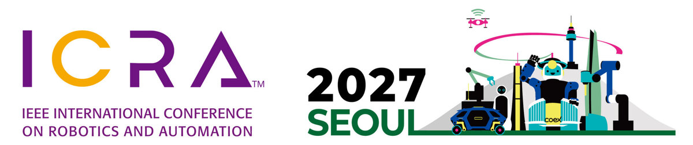

01
Grounding
Connecting skills to the world
Which skill applies, to which object, and when? Perception, scene understanding and language that tie abstract skills to the objects in front of the robot.
ICRA 2027 Workshop
Robots can now learn to grasp, push and place objects reliably. Chaining those skills into long, contact-rich tasks is still an open problem. This full-day workshop brings together researchers in perception, robot learning and control to work out what it takes to get from single skills to complex manipulation.

Part of ICRA 2027, the IEEE International Conference on Robotics and Automation, held 24–28 May 2027 at Coex in Seoul. The workshop runs on the last day of the conference.
ICRA 2027 websiteScope
Learned policies, large pretrained models and better hardware have made single manipulation skills far more capable. A robot can now be taught to grasp unfamiliar objects, push them into place or open a drawer from a modest number of demonstrations.
Real tasks are rarely a single skill. Replenishing a shelf, clearing a cluttered table or moving a large object with two arms means picking the right skill at the right moment, adapting it to objects the robot has never seen, and keeping contact under control in tight spaces. Small errors compound over long horizons:
A skill that succeeds 95% of the time finishes a twenty-step task only about a third of the time. (0.9520 ≈ 0.36)
This workshop looks at that gap through three lenses: how skills are grounded in perception and language, how they are learned and composed, and how they are controlled through contact. We want to bring the robot learning, task and motion planning, and control communities into one room to compare approaches and agree on what is still missing.
Three threads
The invited talks, contributed papers and panel discussion are built around the three parts of the workshop title.
Connecting skills to the world
Which skill applies, to which object, and when? Perception, scene understanding and language that tie abstract skills to the objects in front of the robot.
Acquiring and composing skills
How are skills learned from demonstrations, play or simulation, and how are they sequenced and reused for tasks nobody demonstrated end to end?
Executing through contact
How do long, contact-rich executions stay stable, safe and recoverable when the world pushes back?
Topics
We welcome work on any part of the path from individual skills to complex manipulation, including:
Timeline
Dates are tentative. All deadlines are 23:59 Anywhere on Earth (AoE).
Attending
The workshop takes place at Coex (Convention & Exhibition Center) in Seoul, South Korea, the main venue of ICRA 2027. The room will be announced closer to the conference.
Venue details on the ICRA 2027 websiteAttending the workshop requires registration through ICRA 2027. The conference expects to open registration in early February 2027.
Registration updates from ICRA 2027Short papers are due in March 2027.